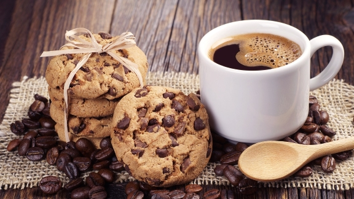
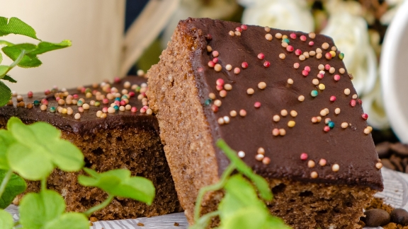
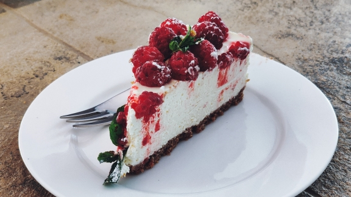

Amerikkalaiset keksit ovat helppo ja nopea herkku.
Voit lisätä kekseihin erilaisia suklaita oman makusi mukaan!
Amerikkalaiset keksit ovat helppo ja nopea herkku.
Voit lisätä kekseihin erilaisia suklaita oman makusi mukaan!
5,5dl vehnäjauhoja
1tl ruokasoodaa
1tl suolaa
2tl vaniljasokeria
1,8dl sokeria
1,8dl fariinisokeria
2 isoa munaa
n.2dl valmiita suklaarakeita
240g pehmeää margariinia
- Yhdistä jauhot, ruokasooda, suola ja vaniljasokeri kulhossa. Vatkaa margariini ja sokerit pehmeäksi vaahdoksi. Vatkaa munat joukkoon yksitellen. Lisää kuivat aineet sekä suklaarakeet ja pähkinät.
- Tee taikinasta pellille pieniä palloja. Ne tasoittuvat ja leviävät uunissa.
- Paista 180 asteessa uunin keskitasolla 20-25 minuuttia. Jäähdytä ritilällä ja säilytä peltirasiassa, jotta keksit pysyvät pehmeinä.

Mokkapalat ovat aina varma valinta tarjottavaksi vieraille.
Mokkapalat ovat aina varma valinta tarjottavaksi vieraille.
4 kananmunaa
2,5dl sokeria
200g voita
2dl maitojuomaa
5dl vehnäjauhoja
0,5dl kaakaojauhetta
1rkl leivinjauhetta
1rkl vaniljasokeria
75g voita
0,75 dl kahvia
4dl tomusokeria
0,5dl kaakaojauhetta
2tl vaniljasokeria
- Vatkaa munat ja sokeri vaahdoksi.
- Sulata voi kattilassa tai mikrossa. Lisää voisulaan kylmä maito, niin se jäähtyy sopivaksi.
- Yhdistä kuivat aineet.
- Sekoita muna-sokerivaahtoon voi-maitoseos sekä kuivat aineet sihdin läpi. Sekoita tasaiseksi.
- Levitä taikina leivinpaperille ja paista uunissa 200 asteessa 15min.
- Sulata voi kattilassa. Lisää kahvi. Sihtaa muut aineet siivilän läpi. Sekoita, kunnes tasaista. Kaada hieman lämmin kuorrutus pohjan keskelle. Anna valua reunoja kohti. Levitä tarvittaessa lastalla reunoille.

Juustokakun valmistus vaatii hieman aikaa, mutta on varmasti sen arvoista!
Juustokakun valmistus vaatii hieman aikaa, mutta on varmasti sen arvoista!
150g keksejä
50g suolatonta voita
500g tuorejuustoa
2dl kuohukermaa
4 liivatelehteä
60g + 3 rkl tomusokeria
1 munanvalkuainen
0.5tl vaniljaesanssia
200g tuoreita marjoja (esim. mansikoita, vadelmia, mustikoita)
- Sulata voi ja hienonna keksit. Sekoita hienonnettu keksi ja sulatettu voi. Laita muruseos tasaisesti vuoan pohjalle. Laita vuoka jääkaappiin noin 30 minuutiksi.
- Liota liivatelehtiä kylmässä vedessä noin 5 minuuttia. Kuumenna 5 rkl kuohukermaa 10-15 sekunttia mikrossa. Purista liivatelehdistä vesi ja sekoita ne kermaan. Sekoita kunnes seos on jäähtynyt.
- Sekoita tuorejuusto, vanilijaesanssi ja tomusokeri kulhossa. Vaahdota kerma ja sekoita siihen 3 rkl tomusokeria. Pane kermavaahto jääkaappiin.
- Sekoita liivateseos ja tuorejuustoseos keskenään. Kääntele kermavaahto tuorejuustoseokseen. Vaahdota munanvalkuainen kovaksi vaahdoksi ja lisää se seokseen.
- Levitä seos keksipohjan päälle vuokaan. Peitä vuoka kelmulla ja anna olla jääkaapissa yön yli.
- Koristele marjoilla ja marjakastikkeella.